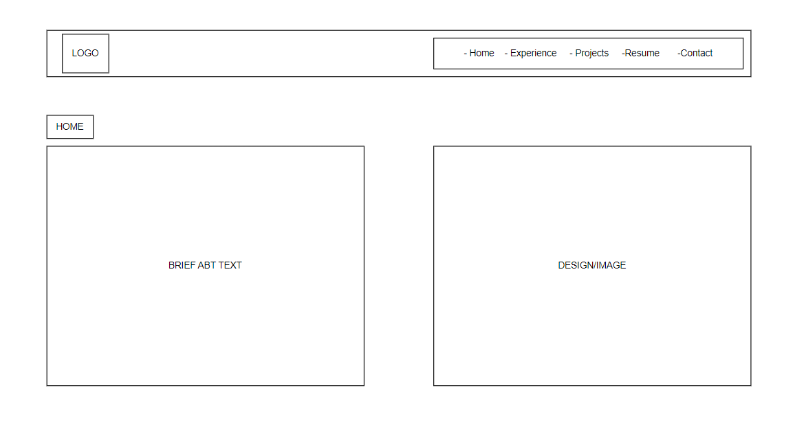
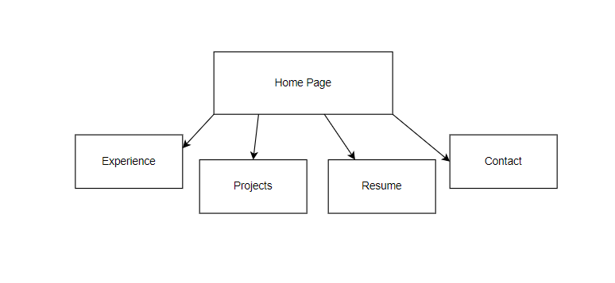

Client Project Outline
Project Overview:
- This is going to be a personal webpage for my client so people can easily gain acces to her projects, resume, contact information, and other personal information.
- The intended users for this webpage will be anyone that's wanting to get more information about Kendyll or pontential employers who are interested in trying to find out more information about her. This will be a quick and easy place for them to access all of it.
- The content on this website will include her personal projects, CV, contact information, personal background, and any other additional information she's willing to share.
Client Information:
- Kendyll Bache
- Personal Webpage
- kbache4@gmail.com
Wireframe:
Site Map:
Page Design:
Home
- The home page will have a graphic of Kendyll's name or an image and a brief sentence describing her and maybe a quote.
- There will be a html and css validation on this page, there will be a header on this page for users to navigate back and forth between other pages on the website.
Resume
- The resume page will have a designed version of her resume so it's easy for users to read and it will also have links to any external pages or sites linked on the resume.
- This page will have a download link for employers who want to download a copy of her resume for future reference.
- This page will also have html and css validation links, dynamic header, and dynamic footer.
Projects
- The projects page will have some images and description of projects and then dropdowns for the user to click on if they want more information about the project. Also, depending on the project there will be ways for the user to click on it and interactt with it.
- This page will also have html and css validation links, dynamic header, and dynamic footer.
Exerpience
- The exoerience page will let people read more in depth about what software experience she has and what classes she's used them in and any other small things that yu would not normally list on a resume. This page may also include soft skills and any clubs or other activities she's gained them through. It may also include any talks or events she's gone to and how these affected her and what she learned or how she participated.
- This page will also have html and css validation links, dynamic header, and dynamic footer.
Contact
- The contact page will have links to her social medias or other pages for people to reach her. It will also have a place for people to fill out a form about why they need to contact her or just why they stopped by onto the page. Also will have email and phone number.
- This page will also have html and css validation links, dynamic header, and dynamic footer.